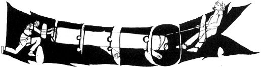

While the militants and the liberals argue whether we're dropping out or copping out (maybe even flipping out!), we're out planting peas and dancing our eyes on all the new green leaves. Collectively we've been through years of pickets and vigils, planning meetings and fund appeals, demonstrations and happenings, peace walks, sit downs, sit ins and climb overs. We figure maybe we just dropped in.
Where it's at is in the action, not in talk. So in the north country of Minnesota, where it still snows sometimes in May . . . we're doing it.
We live here, 7 of us now; we have our hassles and our laughing times. We work together, share our lives, grow our food and love our kids (only one so far, but he mostly belongs to everyone and we give him lots of different names so he'll spread further). Here we live without laws, armies or cops and no one starves, no one gets murdered or even commits suicide because things aren't going his way, and things get done. This is our new world. Here the revolution is almost over . . . all but the tears and the grief, all but the hard part when you find out you're not Christ, or Che, or Allen Ginsberg, or Ira Sandperl, maybe you're not even the you you thought you were. It's all over but the hard part, realizing that you not only know very little about nonviolence, you don't even know how to live with people you dig. Then here at last the revolution is beginning . . .
A GRAND MASTER PLAN
to build a world without fear or hatred to share
one's life and livelihood to become what one really is to find the human way
Step one: Go somewhere where no one else that you know is. Buy some cheap land, a copy of Organic Gardening Encyclopedia and some seed. Establish a base camp disguised as a self sufficient farming community.
Step two: Make friends with the local farmers. Ah, good people! They don't have much, but they'd share that. Always they give us more than we can return, but like one neighbor says . . . "What's a few pumpkins between friends."
Step three: Infiltrate the local peace group. And good people they . . . Come to visit us with electric coffee perculator, "Where's the plug?" We heat it on the wood stove and talk til midnite. Later they invite us into town to speak on panels: "Americanism in the '60's" or "Civil Disobedience." Turn people on to doing things for themselves. ("Stop bitching for better schools or housing or welfare. Go out and build them. Stop paying taxes for war. Refuse the draft.") Turn people on to community and living simply. Turn them on and see the light go click behind their pale eyes. ("But you just can't live on an untaxable income!," "But, man, we're doing it! . . . much laughter.)
Step four: Make friends with Heads and friendly students at your local teachers' college. (Even up here there is a psychedelic shop. Under the rocks and behind the trees come a few draft resisters, a poet and a folksinger, too.) Get them to set up a draft table at the college. Get almost thrown in the lake by the campus veterans. Retreat sometimes . . . but return again. Invite them on to being turned on without drugs. Let them turn you on with their music. Look at each other and smile a lot . . . who can help it!
Step five: Make friends with your local Feds. (Ali, not so good people!) Entertain them when they arrive to ask you how come you're writing all those letters to the draft eligible men in the county or how come you're not in the army or how come you aren't married to the girl you live with. Offer to show them the cow. Or offer to show them the door. But remember their names. They will most likely come back . . .
Step six: Drop ideas on peoples' heads instead of bombs. Swoop into Duluth for a conference at the U. Let an audience capture you and spread the word. We're Free! You're Free! All you have to do is do it. Whatever bonds hold you are tied with your own hands. And you don't have to go to college for 4 years, or get a "Good" job, or get married, or cut your hair short, or wear a girdle, or join the army, or pay taxes. You may pay a price, but then there is a price for everything. Whatever it is that you really want to do, do it now, for life is short and love is fleeting when it's not spent. Meet new draft resisters. Love them all. Sing. Talk. Drink wine. Invite them out to the farm for a week when school's out. Then retreat.
Come home. Dig your toes in the warm dirt. Pick a tick off your friend's neck. Have a few stupid arguments. Write to the urban poor telling them you'd like to help families get out of the city if they want. Go out and plant a row of carrots. Make a mistake. Roll in the grass and begin again.
Patsy Richardson
Free Folk
Pennington, Minn.
|
 Jane Bevans |
|
|